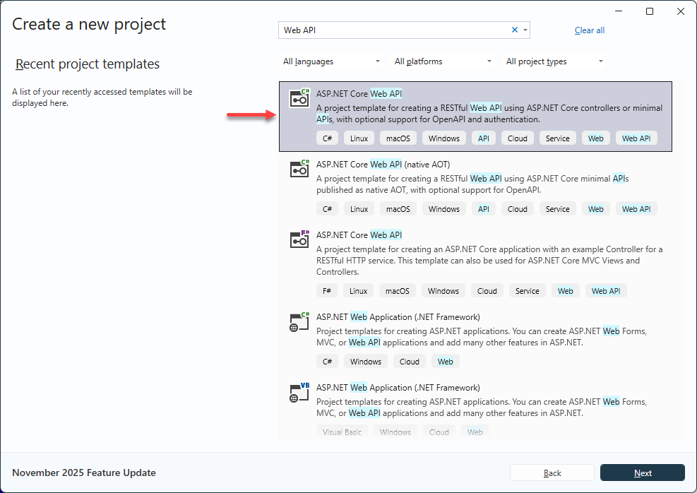
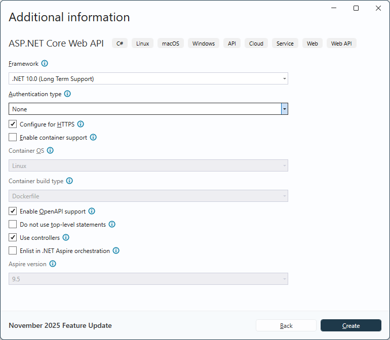

Getting Started with ASP.NET Core Web API in Visual Studio
Prerequisites
Create a ASP.NET Web API in Visual Studio
You can create a ASP.NET Web API using Visual Studio in one of the following ways,


Install RecroGrid Framework in the App
RecroGrid Framework is distributed as the 
Install the package using .NET CLI or Package Manager
dotnet add package Recrovit.RecroGridFramework.Core
Install-Package Recrovit.RecroGridFramework.Core
Warning
After setting up the RecroGrid nupkg reference, you need to build the program, which will result in the package generating the BaseDbContext in the Area\RGF\DbModel directory.
Register RecroGrid Framework Services
Open Program.cs file and register the RecroGrid Framework Services in the web app.
var builder = WebApplication.CreateBuilder(args);
// Add services to the container.
builder.Services.AddControllersWithViews();
builder.AddRGF();
builder.AddBaseDbContext();
var app = builder.Build();
// Configure the HTTP request pipeline.
app.UseHttpsRedirection();
app.UseStaticFiles();
app.UseRouting();
app.UseAuthorization();
app.UseRGF<BaseDbContext, BaseDbContextPool, BaseDbContextPool>();
app.MapControllers();
app.Run();
Enable Cross-Origin Requests (CORS)
Program.cs
var builder = WebApplication.CreateBuilder(args);
builder.Services.AddCors(options =>
{
options.AddPolicy("RGF.Client", b =>
{
var allowedOrigins = builder.Configuration
.GetSection("CorsSettings:AllowedOrigins")
.Get<string[]>();
if (allowedOrigins != null)
{
b.WithOrigins(allowedOrigins)
.AllowAnyHeader()
.AllowAnyMethod();
}
});
});
// Add services to the container.
builder.Services.AddControllersWithViews();
builder.AddRGF();
builder.AddBaseDbContext();
var app = builder.Build();
// Configure the HTTP request pipeline.
app.UseHttpsRedirection();
app.UseStaticFiles();
app.UseRouting();
app.UseCors("RGF.Client");
app.UseAuthorization();
app.UseRGF<BaseDbContext, BaseDbContextPool, BaseDbContextPool>();
app.MapControllers();
app.Run();
appsettings.json
"CorsSettings": {
"AllowedOrigins": [
"https://{CLIENT-DOMAIN}" //e.g. "https://localhost:11920", "http://example.com"
]
}